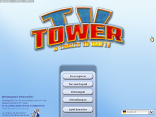
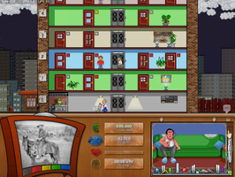
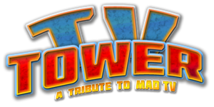

TVTower
Dieser Artikel wurde für die folgenden Ubuntu-Versionen getestet:
Ubuntu 16.04 Xenial Xerus
Ubuntu 14.04 Trusty Tahr
Zum Verständnis dieses Artikels sind folgende Seiten hilfreich:
TVTower  (ehem. TVGigant) ist eine quelloffene, kostenlose Wirtschaftssimulation, die sich stark an das 1991 veröffentlichte Mad TVMad TV anlehnt. Im Remake des Klassikers übernimmt man die Rolle des Programmdirektors eines Fernsehsenders. Durch die Erstellung von Sendeplänen, den Kauf von Filmen und Serien für ein abwechslungsreiches Programmangebot, die Ausstrahlung von Werbespots und den Kauf von Sendemasten um den Ausstrahlungsbereich des Senders auszudehnen wird man zum erfolgreichsten der insgesamt 4 Spieler.
(ehem. TVGigant) ist eine quelloffene, kostenlose Wirtschaftssimulation, die sich stark an das 1991 veröffentlichte Mad TVMad TV anlehnt. Im Remake des Klassikers übernimmt man die Rolle des Programmdirektors eines Fernsehsenders. Durch die Erstellung von Sendeplänen, den Kauf von Filmen und Serien für ein abwechslungsreiches Programmangebot, die Ausstrahlung von Werbespots und den Kauf von Sendemasten um den Ausstrahlungsbereich des Senders auszudehnen wird man zum erfolgreichsten der insgesamt 4 Spieler.
Das Spiel verfügt außerdem über einen Mehrspielermodus.
|  |  |
| Menü | Spielszene |
Installation¶
Von der Entwicklerseite  unter dem Punkt "Downloads unserer Projektdateien" das aktuelle Archiv des Spiels herunterladen. Hier ebenfalls einen eventuell vorhandenen Patch beziehen.
unter dem Punkt "Downloads unserer Projektdateien" das aktuelle Archiv des Spiels herunterladen. Hier ebenfalls einen eventuell vorhandenen Patch beziehen.
Das Gesamtpaket TVTower_VERSIONSNUMMER_DATUM.zip entpacken [2] z.B. nach ~/Spiele. Über die Datei TVTower_Linux32 (32-Bit-System) bzw. TVTower_Linux64 (64-Bit-System) kann das Spiel aus dem Installationsverzeichnis heraus gestartet [3] werden. Auf Wunsch einen Menüeintrag [4] vornehmen.
64-Bit¶
Nutzer eines 64-Bit-Systems müssen die folgenden Pakete installieren [1]:
libxxf86vm1:i386
libfreetype6:i386
libasound2:i386
libpulse0:i386
libgl1-mesa-glx:i386
libasound2-data:i386
libasound2-plugins:i386
 mit apturl
mit apturl
Paketliste zum Kopieren:
sudo apt-get install libxxf86vm1:i386 libfreetype6:i386 libasound2:i386 libpulse0:i386 libgl1-mesa-glx:i386 libasound2-data:i386 libasound2-plugins:i386
sudo aptitude install libxxf86vm1:i386 libfreetype6:i386 libasound2:i386 libpulse0:i386 libgl1-mesa-glx:i386 libasound2-data:i386 libasound2-plugins:i386
Patch¶
Sofern für die aktuelle Version des Spieletitels ein Patch (TVTower_VERSIONSNUMMER.DATUM.Patch.zip) verfügbar ist so werden die enthaltenen Daten extrahiert [2] und in das Installationsverzeichnis verschoben.
Bedienung¶
Das Spiel wird mit der Maus gespielt werden. Im Hauptmenü kann man die gewünschte Spielsprache auswählen.
| Hauptmenü | |
| Menüpunkt | Beschreibung |
| "Einzelspieler" | Spiel starten im Einzelspielermodus. |
| "Netzwerkspiel" | Gegen andere Spieler im Netzwerk antreten. |
| "Onlinespiel" | Einem Onlinespiel beitreten oder ein eigenes eröffnen. |
| "Einstellungen" | Grundeinstellungen für Einzelspieler- und Mehrspielermodus definieren. Soundausgabe (de)aktivieren und Grafikoptionen verändern. |
| "Spiel beenden" | Spiel verlassen. |
Anleitung¶
Im Installationsverzeichnis findet sich die Datei Spielanleitung.txt, welche ins Spielgeschehen einführt.
Tastenkürzel¶
| Tastenkürzel | |
| Taste(n) | Funktion |
 | Charakter steuern / Aktion ausführen. |
 | Menü bzw. Raum verlassen. |
| S / L | Spielstand speichern / laden |
| ↑ / ↓ | Spielgeschwindigkeit beeinflussen. |
| Esc | Spiel verlassen. |

Infobox¶
| TVTower | |
| Genre: | Wirtschaftssimulation |
| Sprache: |   |
| Veröffentlichung: | 2002+ |
| Entwickler: | Ronny Otto & Manuel Vögele |
| Systemvoraussetzungen: | - |
| Medien: | Download |
| Strichcode / EAN / GTIN: | - |
| Läuft mit: | nativ |

- Erstellt mit Inyoka
-
 2004 – 2017 ubuntuusers.de • Einige Rechte vorbehalten
2004 – 2017 ubuntuusers.de • Einige Rechte vorbehalten
Lizenz • Kontakt • Datenschutz • Impressum • Serverstatus -
Serverhousing gespendet von